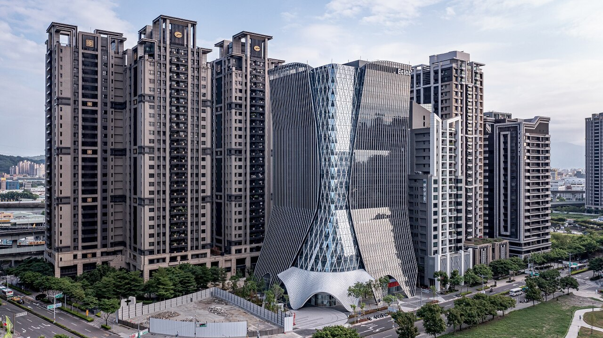

新莊公司財務健檢・企業貸款媒合
新莊公司財務健檢：
從退件通知那一句話，往回推
新莊的工廠全新北最多：生產中 3,249 家、占全市 17.5%（經發局工廠登記清冊 115 年 6 月，鋮馨自行統計），生產總額卻只排第 5（主計總處 110 年工商普查）。廠多、廠小，帳多半跟著老闆一個人跑。被退件時，通知上那一句話通常不是原因，是結果。健檢把它往回推：推到哪一份文件、哪一個真正的原因、送件前 30 天可以補什麼。需要資金時，再接企業貸款媒合。

新莊公司財務健檢，是把退件通知上的一句話，往回推到三份文件裡真正的原因。新莊生產中工廠 3,249 家、全市第 1，其中金屬製品 1,045 家，占全市金屬製品工廠的 23.1%（經發局工廠登記清冊 115 年 6 月，鋮馨自行統計）；稅籍營業人 30,014 家、全市第 2，資本額中位 50 萬、獨資 37.4%（財政部營業稅籍資料 115-09-14，鋮馨自行統計）。金屬加工、機械設備這類廠，貨款月結、設備分期、公私帳一起跑，退件通知上寫的「營收規模不相當」「還款來源不明確」，多半是文件對不上，不是生意不好。健檢不動任何數字，只把真實文件攤開，指出每一句說法對到哪份文件、哪個原因、送件前 30 天可以補什麼；需要資金時，再銜接企業貸款媒合。健檢是資料整理與體質分析，非核貸預測；本公司非金融機構，最終核貸由金融機構決定。
- 倒推順序：退件說法 → 真正原因 → 攤開哪份文件 → 送件前 30 天補什麼。
- 三份文件：三年 401 表、三年營所稅結算申報書、近 12 個月公司存摺——退件通知原件請一併帶來。
- 之後：自己補件，或進企業貸款媒合。先做公司財務健檢，健檢看完即使公司資歷不足，我們也協助媒合企業貸款；鋮馨提供諮詢與媒合、非資金提供方，最終核貸由金融機構決定。
- 上傳：走公司財務健檢主頁的表單，加密傳輸、結案後 6 個月內刪除。
新莊的公司長什麼樣：工廠全市最多，生產總額只排第五
先看工廠。經發局工廠登記清冊（115 年 6 月，鋮馨自行統計）：新莊生產中工廠 3,249 家，占全市 17.5%、第 1。行業別金屬製品 1,045 家（區內 32.2%，等於全市 4,517 家金屬製品工廠的 23.1%）、機械設備 562 家（17.3%）、塑膠製品 419 家（12.9%）、食品 197 家、電力設備 127 家、印刷 117 家。廠址最密的路段依序是化成路 818、新樹路 565、新莊中正路 393、瓊林南路 236、五權一路 197、福營路 130 家；地址帶「五工」或「五權」的新北產業園區道路合計 341 家。另一套口徑，新北市主計處統計年報（112 年底，經濟部工廠校正）營運中工廠 3,213 家，同樣全市第 1。
這些廠落在三種型態的產業用地上，口徑各不相同，本頁分開標。①編定園區：經濟部產業園區管理局的「新北產業園區」，「位於新北市五股區及新莊區」，總開發面積 140.55 公頃、園區內廠商 1,596 家（園區服務中心頁面，2023/09/26 更新；跨兩區，新莊區內的面積與家數官方沒有分開統計），②都市計畫乙種工業區：官方點名的化成工業區（112.96 公頃，範圍「南鄰中山路一段，西鄰化成路」，經發局 108 年 11 月專案通盤檢討簡報）、西盛工業區、國泰工業區、頭前工業區。③產業專用區：新莊北側知識產業園區，33.3430 公頃（城鄉局細部計畫，112 年 2 月）。
主計總處《110 年工業及服務業普查報告 第 11 卷 新北市》（110 年底）表四：新莊區場所單位 27,880 家、占全市 11.37%、第 2；從業員工 148,645 人、第 3；生產總額 3,998.32 億元、占 8.44%，排第 5。從業員工裡製造業 54,199 人、占 36.46%。報告原文：「以金屬製品製造業、批發業為主，就小行業觀察，電線及配線器材製造業生產總額 153 億元，居全國各鄉鎮市區第 2 位。」五年間場所單位增加 11.04%——新莊是還在長的區。
換成稅籍口徑看（財政部營業稅籍登記資料，資料日 115-09-14，鋮馨自行統計）：新莊 30,014 家營業人，全新北第 2，資本額中位數 50 萬，100 萬以下占 65.9%；有限公司 43.1%、獨資 37.4%、股份有限公司 12.4%。大類是批發零售 12,185 家（40.6%）、製造 4,787 家（15.9%）、營建工程 3,372 家（11.2%）、住宿餐飲 2,411 家（8.0%）；細類最多的是室內裝潢工程 997 家。設立於 110 年以後的占 30.9%；78.0% 使用統一發票。
三套家數不能混算：普查場所單位 27,880（110 年底）、公司登記 18,072 家加商業登記 15,304 家（經發局《114 年統計年報》，114 年底）、稅籍 30,014（115-09-14）——口徑不同，本頁引用哪一套就標哪一套。但三套指向同一個結構：廠最多、產值第五、單位小。公司登記實收資本額合計 3,000.02 億元、全市第 4（同年報），稅籍資本額中位卻是 50 萬——錢集中在少數大廠，家數集中在小公司。小公司被退件，通知上那一句話往往是三份文件對不上的結果；健檢要做的，就是從那句話往回推。
（經發局登記清冊 115/6 自行統計）
（主計總處 110 年工商普查）
（財政部 115-09-14 自行統計）
退件通知怎麼寫：五種常見說法，先對成一張表
退件通知不會寫「你的 401 表跟存摺對不上」，只會寫一句結論，而結論的措辭大致落在五種。本頁不點名任何銀行，也不替金融機構解釋它的判斷；健檢能做的，是把每一句往回推到文件層面。下表是地圖，後面三段是倒推的路——原因、文件、補件，跟新莊多數廠的送件順序剛好相反。
| 退件通知上的說法 | 新莊常見的真正原因 | 健檢攤開哪份文件 | 送件前 30 天可以補 |
|---|---|---|---|
| 一、「營收規模與申請金額不相當」 | 代工貨款月結，開票落在交貨後一到兩期；營所稅採書審，所得額是純益率推算 | 三年 401 表十八期、營所稅結算申報書 | 主要客戶合約或長期訂單、出貨單與對帳單 |
| 二、「財務資料不足以佐證營運狀況」 | 客戶匯款進負責人個人帳戶、現金收款、公私帳同一本 | 近 12 個月公司存摺，對照負責人帳戶 | 匯款紀錄說明、POS 或電子支付對帳單 |
| 三、「還款來源不明確」 | 月底餘額隨設備款與原料款大起大落，淨流入看不出來；應收集中在少數客戶 | 存摺月底餘額、每月淨流入與既有月付並排表 | 應收帳齡表、合約期限、長期往來紀錄 |
| 四、「既有負債偏高」 | 設備分期或租賃、負責人個人借款用在公司、股東往來餘額大 | 營所稅結算申報書的資產負債表、股東往來、既有借款清單 | 設備分期契約與設備清單、股東往來的匯款紀錄 |
| 五、「成立時間短、往來紀錄不足」 | 二代另設新統編接老廠訂單；新莊稅籍營業人 30.9% 設立於 110 年以後 | 新舊公司 401 表對照、工廠登記、負責人經歷 | 訂單承接與客戶往來年限證明、工廠登記文件 |
表中的說法是通知上常見的措辭類型，不是任何一家機構的原文；「真正原因」指文件層面最常對到的狀況，核貸判斷仍由金融機構決定。
每一句說法背後，新莊的廠最常是什麼原因
每一張卡只講「怎麼看」，不講「怎麼改」：補的是合約、對帳單、匯款紀錄，不是數字。
化成路 818 家、新樹路 565 家生產中工廠（登記清冊 115 年 6 月自算），不少替機械廠與園區內廠商做金屬加工、零件代工。代工的錢是月結的：這個月交貨、下個月對帳、再下個月收款開票，401 表上銷項落後交貨一到兩期，營收看起來比實際接單少。另一個常見原因在營所稅結算申報書採擴大書面審核，所得額用行業純益率推算，帳上的公司比真實的公司小。
新莊稅籍營業人獨資 37.4%、資本額中位 50 萬（115-09-14 自行統計）；西盛里 803 家、頭前里 393 家生產中工廠（登記清冊 115 年 6 月自算）裡，很多是老闆兼師傅兼會計。客戶匯款進負責人個人帳戶、零星收現金、材料用個人卡刷——不是有問題，是公司帳戶上看不到公司。「不足以佐證」多半指這個。
地址帶五工、五權的廠 341 家（登記清冊 115 年 6 月自算），園區管理局說這裡「多為中小企業以電力電子、機械修配及金屬加工為主」。機械廠的存摺長相是：一筆設備款進來、一筆原料款出去，月底餘額像心電圖，「每月從哪裡拿出錢還」直接看不到答案。健檢把十二個月的月底餘額、每月淨流入、既有月付並排成一張表——只並排，不試算成數、不推估額度。
化成工業區 112.96 公頃（經發局 108 年 11 月簡報）裡的金屬製品廠，一台 CNC、一台沖床都是分期或租賃；資本額 50 萬、設備分期好幾年的公司，資產負債表上負債看起來很重。再加上負責人把個人的錢投進公司走「股東往來」，通知上就會出現「既有負債偏高」。設備是生財工具，問題多半在文件沒說清楚這筆負債對應哪一台機器。
新莊稅籍營業人有 30.9% 設立於 110 年以後（115-09-14 自行統計）。輔大站、丹鳳一帶有的老廠是二代接手時另設新公司：訂單、客戶、設備都在，統編是新的，申報年資從零起算。「往來紀錄不足」講的是這家新公司，不是這個家族一路做下來的生意。
每一句說法，攤開哪一份文件：三份紙本各管哪幾句
五種說法倒推回去，落點只有三份文件。新莊稅籍營業人 78.0% 使用統一發票（115-09-14 自行統計），差別在健檢怎麼讀。
三年十八期排成一條線，看銷項相對交貨期的落後、季節性是否同期一致、進項是否跟著銷項起伏。金屬加工廠的原料進項（鋼材、鋁料、刀具）常先於銷項一到兩期，進項大於銷項本身不是紅燈，長期留抵累積又沒有對應的設備或庫存才是。新舊公司的 401 表並排，看得出訂單是不是真的承接過來。
看書審或查帳、負責人薪資、股東往來三個對照，再看資產負債表上的設備與它對應的負債。申報書是您的會計師或記帳士做的正式文件，健檢不改寫、也不建議改寫，只把它跟 401 表與存摺放在同一張表上互相說明。
金流勾稽：每一筆進出按對方戶名歸戶，跟 401 表的銷項與進項客戶比，算出可對應的比例、最大一到三個匯款來源的集中度、月底餘額與每月淨流入。勾稽率是多少就是多少，健檢不會替您解釋成「所以會過」或「所以不會過」。
攤開之後常見的結果是：通知寫的是「營收規模」，文件露出的其實是「開票落後」；寫的是「還款來源」，其實是「存摺沒歸戶」。健檢報告的每一個紅黃燈，都會標上它對到通知上的哪一句話。另外一提，新莊稅籍裡麵店小吃 813 家、餐廳 584 家（115-09-14 自行統計），新莊廟街、慈祐宮周邊這類現金比重高的店，存摺可勾稽比例偏低是常態，健檢會列出可補的替代文件——POS 日結、電子支付對帳單、進貨單——都是您手上已經有的東西，健檢不會替您生出任何一張。
送件前 30 天：四週，把該補的補齊
倒推到最後一站是行動。這裡的 30 天不是任何機構的規定，是鋮馨把補件清單排成四週的工作節奏；補的是您本來就有、只是沒整理的文件，不是補數字。四週排法如下，先下載企業週轉資料清單對照。
三年 401 表、三年營所稅結算申報書、近 12 個月公司存摺，加上退件通知原件。化成路、新樹路的廠，401 表多半在記帳士那邊，先開口要。
把五種說法對到文件，拿到一頁紅黃綠燈報告與補件清單，每個燈號旁標著它對到通知上的哪一句。這一步不申請不收費。
客戶合約或長期訂單、出貨單與對帳單、設備分期契約與設備清單、股東往來的匯款紀錄、應收帳齡表。從這個月起，客戶貨款請進公司帳戶——不是改過去，是讓下一份存摺講得清楚。
補齊後可以再做一次健檢，或把整理好的文件帶去往來銀行；若有資金需求，同一份結果可銜接鋮馨的企業貸款媒合服務。先做公司財務健檢；健檢看完即使公司資歷不足，我們也協助媒合企業貸款——依個案營運狀況與還款來源評估，鋮馨提供諮詢與媒合、非資金提供方，最終核貸由金融機構決定。
四週走完，通知上那一句話會變成一份看得見的清單；要不要再送、送去哪裡，本頁不替您決定。系列首篇中和公司財務健檢從三份文件正著講，本頁從退件倒著推，兩頁對照著看也可以。
從新莊到鋮馨：先把退件通知拍給我們
鋮馨總部在新北市中和區中正路 468 號，不在新莊；但倒推這件事不必先跑一趟。第一步是用 LINE 把退件通知拍過來，我們先回您它落在五種說法的哪一種、對到哪一份文件，再約時間。廠在新北產業園區的（服務中心五工路 95 號、機場捷運 A3 站五工路 37 號），申報書多半在往來的記帳士手上，先取件再談。要面談的，中和新蘆線從頭前庄站、新莊站或輔大站上車，同一條線到景安站；開車走新北大道或台 1 線。
健檢本身不收費：三年 401 表、三年營所稅結算申報書、近 12 個月公司存摺加退件通知，30 分鐘對出五種說法各落在哪份文件，交給您一頁紅黃綠燈與四週補件清單，不申請不收費。之後若進企業貸款媒合，完整送件包綁顧問服務，費用面談時說明。
文件不必在本頁上傳。請走公司財務健檢主頁的表單：檔案採加密傳輸並存放於本公司自行管理的主機，不經第三方表單服務，僅承辦人員可讀，結案後 6 個月內刪除。不方便上傳的，帶紙本到中正路 468 號面談也可以。
被退件之後最容易遇到的，是聲稱能「處理退件」、審核前就要您先匯款或先付手續費的管道——這是警訊，查證步驟見二胎房貸詐騙怎麼分辨，手法放到企業貸款上是一樣的。鋮馨的定位是諮詢與媒合，本公司非金融機構、非資金提供方。
新莊公司財務健檢常見問題
新莊的金屬加工廠原料進項大於銷項，退件說「營收規模不相當」，健檢會怎麼看？
先把三年十八期 401 表排成一條線，把鋼材、鋁料、刀具的進項對到後面一到兩期的銷項——代工月結、開票落後交貨，是化成路、新樹路這類代工廠（經發局工廠登記清冊 115 年 6 月生產中分別 818 家與 565 家，鋮馨自行統計）最常見的形狀，進項先於銷項本身不是紅燈。標黃燈的是銷項驟降卻對不到訂單減少的理由，補的是客戶合約、出貨單與對帳單；長期留抵累積又沒有設備或庫存對應，才標紅燈。健檢是資料整理，非核貸預測。
機械設備分期好幾年、公司資本額只有 50 萬，新莊的機械廠會被看成負債偏高嗎？
資產負債表上會這樣看起來。新莊稅籍營業人資本額中位 50 萬（財政部營業稅籍資料 115-09-14，鋮馨自行統計），營運中工廠裡機械設備業 460 家（新北市主計處統計年報，112 年底），設備分期金額超過資本額在這一行並不少見。健檢不替您判斷金融機構怎麼認定，只把每一筆設備負債對到分期契約與設備清單，折舊年限與剩餘期數列在旁邊，讓負債對應的生財工具看得見。是否影響核貸，由金融機構決定。
新莊的廠房是自用還是租用，對公司財務健檢有差嗎？
健檢看的都是三份文件，差在文件裡露出的地方不同。租用的廠——新北產業園區的標準廠房、化成工業區裡的租廠——租金在營所稅結算申報書的費用項與存摺的固定支出要對得上，租期是「還款來源」那一欄的說明文件。自用的廠，房地在資產負債表上是資產，若還有房貸，月付列進既有負債；廠房要不要作為擔保，是之後企業貸款媒合階段才討論的事，健檢不代入任何估值。
新莊公司被退件之後多久可以再送？
沒有固定天數，本頁的「送件前 30 天」是鋮馨排補件的工作節奏，不是任何金融機構的規定。關鍵不是等多久，而是通知上那一句話對到的文件補齊了沒有：補的是合約、對帳單、匯款紀錄這類說明文件，不是改申報數字。補齊後可以再做一次健檢確認燈號有沒有變；再送與否、送去哪裡、核不核准，都由金融機構決定。
我的廠在五工路的新北產業園區，跟化成路的廠做健檢有什麼不同？
方法一樣，差在口徑要標清楚。新北產業園區是經濟部產業園區管理局的編定園區，「位於新北市五股區及新莊區」，園區廠商 1,596 家（園區服務中心頁面，2023/09/26 更新；跨兩區，新莊區內未分開統計）；化成工業區是新莊都市計畫的乙種工業區，112.96 公頃（經發局 108 年 11 月專案通盤檢討簡報）。兩種用地的租約、分期契約與工廠登記文件格式不同，健檢各自對到存摺與申報書；用地型態本身不是燈號。
新莊二代接手另設新公司，成立不到三年被說「往來紀錄不足」，健檢能做什麼？
把新舊兩家公司的 401 表並排，看訂單、客戶、進項供應商有沒有真的承接過來；再把工廠登記、設備移轉、負責人在舊公司的年資列在旁邊。新莊稅籍營業人 30.9% 設立於 110 年以後（財政部營業稅籍資料 115-09-14，鋮馨自行統計），輔大站、丹鳳一帶的老廠二代接班常見這種情況。健檢看完即使公司資歷不足，我們也協助媒合企業貸款；鋮馨提供諮詢與媒合協助、非金融機構、非資金提供方，核貸由金融機構決定。
新莊公司的健檢會不會把退件通知上的原因「修掉」？
不會。健檢不動 401 表、營所稅結算申報書、存摺上的任何一個數字，也不代為產製任何憑證、流水或報表；申報書是您的會計師或記帳士做的正式文件，健檢不改寫、也不建議改寫。健檢做的是把通知上那一句話對到文件裡真正的原因，列出可補的說明文件——合約、對帳單、匯款紀錄——由您自己補。
新莊的退件通知原件也要交嗎？文件傳到哪裡、放多久？
要，倒推從那張通知開始，原件請一併上傳或帶來。文件不在本頁上傳，請走公司財務健檢主頁的表單，檔案採加密傳輸並存放於本公司自行管理的主機，不經第三方表單服務，僅承辦人員可讀，結案後 6 個月內刪除。廠在新北產業園區、化成工業區這一帶而不方便上傳的，帶紙本到中和區中正路 468 號面談也可以，不申請不收費。
本頁服務為資料整理與財務體質分析，非要約或個案承諾，亦非核貸預測。分析結果依您提供之文件內容而定；本公司非金融機構，提供諮詢與媒合協助、非資金提供方，如後續進行融資申請，最終核貸由金融機構決定。
新莊的公司，退件通知先往回推，再決定要不要再送
那張通知加上 401 表、營所稅結算申報書、12 個月存摺，先拍給 LINE 或帶到中正路 468 號；30 分鐘對出它落在哪一份文件、哪一個原因、四週能補什麼。鋮馨不催您做決定，不替您預測結果，也不動任何一個數字。